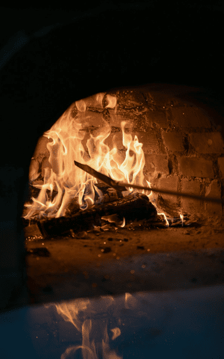
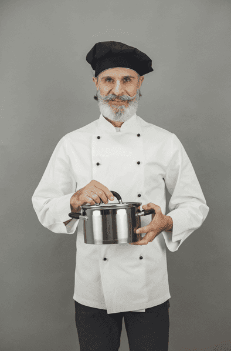
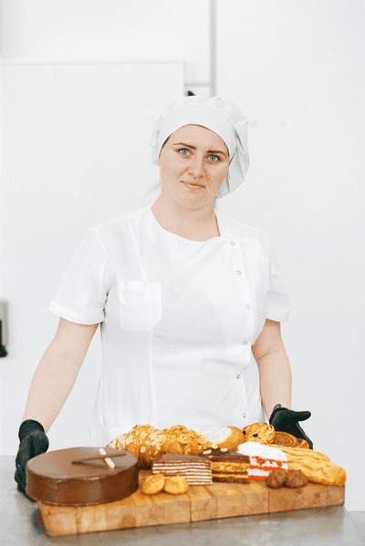
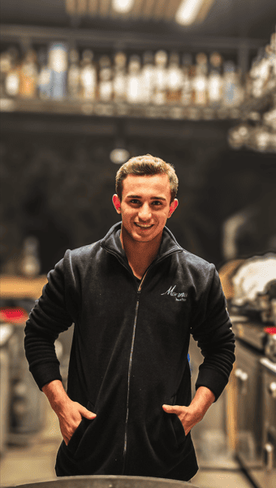

Povestea Noastră
De la o mică bucătărie de familie, la un restaurant de suflet
Cum a început totul
Totul a pornit de la dorința de a nu lăsa să se piardă gustul inconfundabil al mâncării făcute la țară, la cuptorul cu lemne.
În anul 2015, am deschis porțile unei mici locații în Cahul, având în bucătărie chiar rețetele vechi, scrise de mână pe foi îngălbenite de vreme de către bunica Ioana. Fiecare condiment, timpul de coacere și respectul pentru ingredientele curate au fost moștenite neatrinse.
Astăzi, continuăm aceeași misiune sfântă: să oferim oaspeților noștri nu doar mâncare, ci o călătorie în timp, în zilele lipsite de griji ale copilăriei.

Oamenii din spatele gustului
Echipa noastră de maeștri pasionați

Vasile Dumitrescu
Chef Bucătar Senior
Cu peste 15 ani de experiență, Vasile coordonează bucătăria asigurându-se că fiecare sarmală respectă gramajul și gustul secret.

Elena Rusu
Maestru Patisier
Elena este artista din spatele papanașilor pufoși și a cozonacilor calzi care umplu restaurantul de aromă în fiecare dimineață.

Radu Macovei
Manager de Sală
Radu se asigură că ospitalitatea este la ea acasă și că fiecare client este tratat exact ca un membru drag al familiei noastre.